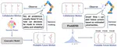
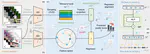

CCF B 2025 Uncertainty-aware Probabilistic 3D Human Motion Forecasting via Invertible Networks Yue Ma, Kanglei Zhou, Fuyang Yu, Frederick W. B. Li, Xiaohui Liang Posted Jan 28, 2025 Conference Paper ICRA 2025 Core A* CCF B PDF arXiv  2024 MAGR: Manifold-Aligned Graph Regularization for Continual Action Quality Assessment Action Quality Assessment (AQA) evaluates diverse skills but models struggle with non-stationary data. We propose Continual AQA (CAQA) … Kanglei Zhou, Liyuan Wang, Xingxing Zhang, Hubert P. H. Shum, Frederick W. B. Li, Jianguo Li, Xiaohui Liang Posted Jul 1, 2024 Conference Paper ECCV 2024 Core A* CCF B PDF Cite Poster Slides DOI GitHub arXiv Oral Presentation (~2.3%)  2023 Hierarchical Graph Convolutional Networks for Action Quality Assessment Action quality assessment (AQA) automatically evaluates how well humans perform actions in a given video, a technique widely used in … Kanglei Zhou, Yue Ma, Hubert P. H. Shum, Xiaohui Liang Posted Jun 1, 2023 Journal Article TCSVT CCF B PDF Cite DOI GitHub